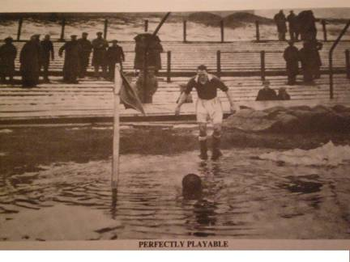

|
Oi Futo, Saturday 12th January,
Have you ever had the impression that the league is so far behind in the fixtures that whatever the conditions, you’re playing? Well, that was the general consensus between the Geckoes and Embassy players as they took to the soaking dirt pitch at Oi on Saturday afternoon.
Sid had called earlier in the day to confirm that the game was indeed on (despite pools of water across the pitch) and from kick off it was apparent that most of the Geckoes players would rather have been elsewhere as it was the Embassy who made much of the early running. The Geckoes weren’t helped by a couple of enforced early substitutions with first Spencer going off for a muddy eye and then Gaz was sent to the first aid bag for having bloody knees (a bit harsh because anyone who’s not had bloody knees at Oi clearly hasn’t been trying hard enough).
Although the Embassy were on top in the early exchanges it was the Geckoes who were closest to scoring with Andy Gill making numerous runs down the right but failing to pick out a team mate or trouble the keeper too much. However it was Andy who was to give the Geckoes the lead after picking the ball up from 20 yards and cracking a shot into the top corner. There was slight confusion as to whether the goal would stand as the Embassy linesman was flagging for offside (seemingly adopting 1980’s rules) but Andy was clearly onside and Quentin correctly overruled the linesman and the Geckoes were 1-0 up.
The perceived injustice got the Embassy fired up and they were the much stronger team as the half progressed and it was no surprise when they equalised. A long ball through the middle wasn’t dealt with by the Geckoes and the Embassy Centre Forward had the relatively simple chance to score. Half-time 1-1.
The Geckoes got the ‘hair dryer treatment’ at half time and began the second half in a much more positive way and began to dominate proceedings. For the next 35 minutes the Embassy left their half three times, the rest of the time they were in their own half defending for their lives. The Geckoes continued to press but on the sidelines it was beginning to feel like one of those days. The Geckoes attacked, and attacked, and attacked and due to a mixture of bad luck (hitting the post/bar four times), good goalkeeping and poor finishing they were unable to get through the Embassy’s defence. Then with just four minutes to go our new right back, Simon Bromwell, drove in a corner that was headed home by Paul James and the Geckoes were finally in front.
The points were secured a couple of minutes later when Kazu set up Jonathan Smith to make it 3-1 and shortly afterwards Quentin brought proceedings to a close.
A good result for the Geckoes in truly awful conditions and hopefully the next time the two teams meet it will be on something that more resembles a football field than a building site.

Simon Bromwell delivering the match winning corner…
Report by Rob Manager
|